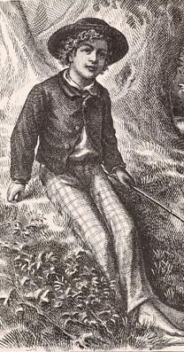
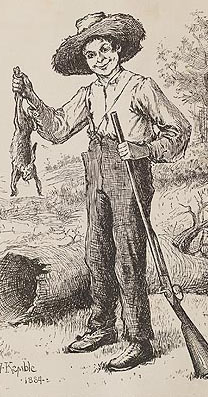

|

 Tom Sawyer and Huck Finn aren't related, and there are enormous differences between them. Huck, for example, thinks of Tom (with his basically bourgeois background) as a "respectable" boy while he himself (the son of the town drunk) is "low-down." Perhaps the most glaring difference is that Huck simply hates the public attention that is described as "food and drink" to Tom. But there are many signs of how these two figures were somehow twinned in MT's imagination. In The Adventures of Tom Sawyer, for example, Huck comes close to stealing the novel's attention away from Tom. Before that novel was even published, MT had begun Adventures of Huckleberry Finn -- but by the end of that book Tom's character is moved back to the center of the stage. In the last section, in fact, Huck is Tom, at least to Aunt Sally and Uncle Silas. Another indication of this linkage is MT's desire to publish Huck Finn in a format designed to mirror the look of Tom Sawyer. And of course Huck narrates the books about Tom that MT published in the 1890s -- Tom Sawyer Abroad and Tom Sawyer, Detective. The two remain linked in the public's mind as well. While it's easy to note this interdependency, however, it's harder to see what it meant to MT, or what it says about him. |